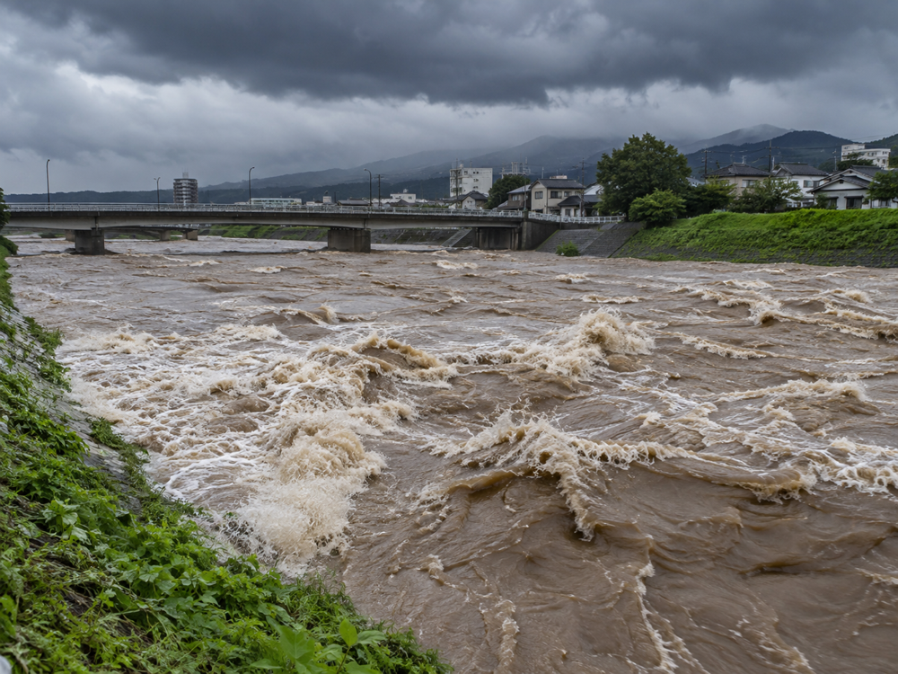
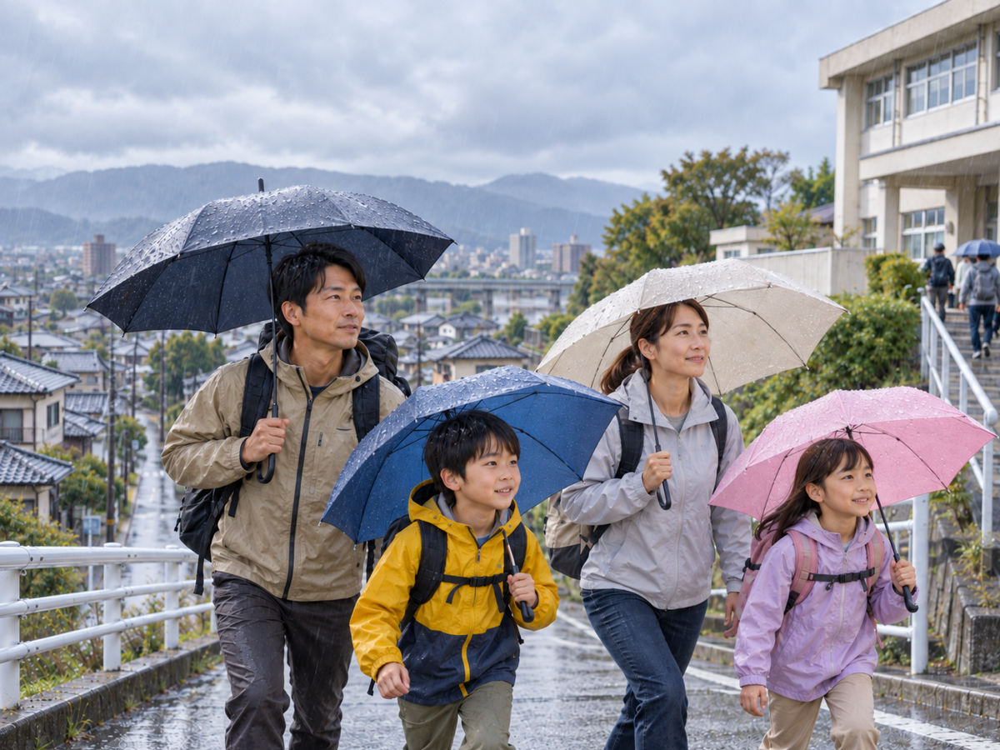
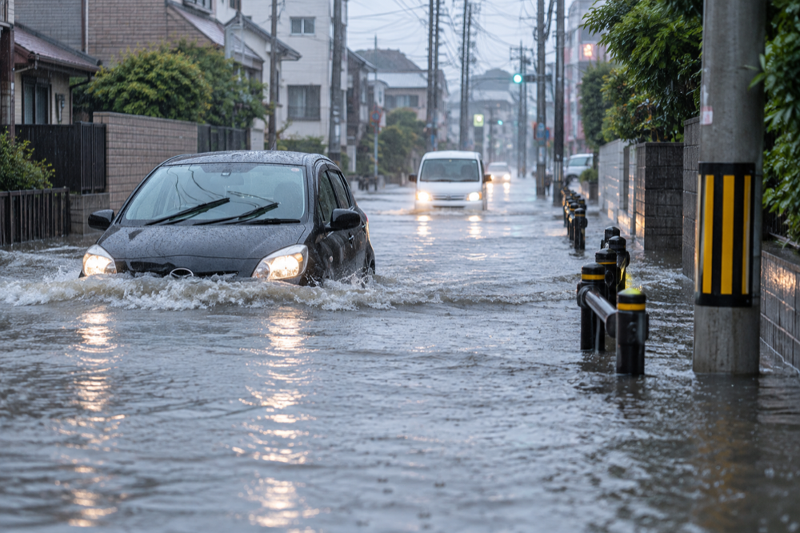
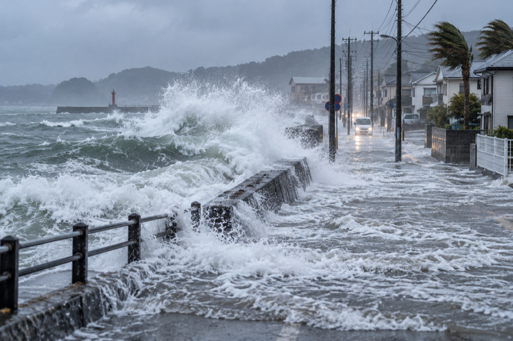
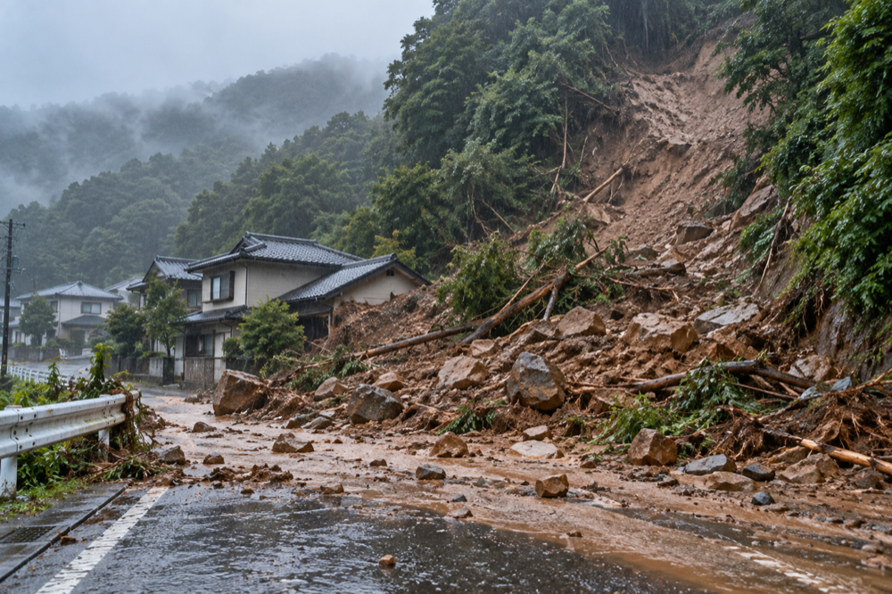

洪水
大雨で川の水が増え、堤防を越えたり壊れたりして、まちに水が広がることがあります。
家族の風水害防災ガイド
洪水・内水氾濫・高潮・土砂災害から家族を守るための学習サイトです。4つの質問から、あなたが次に確認することを見つけられます。
かんたん診断を始める →
かんたん診断
それぞれ、今の状況に近い答えを選んでください。
対象となる災害

大雨で川の水が増え、堤防を越えたり壊れたりして、まちに水が広がることがあります。

短時間の強い雨を排水しきれず、道路や住宅地に水がたまることがあります。

台風などで海面が上がり、海岸近くの地域が浸水することがあります。

大雨で斜面が崩れたり、土石流が発生したりして、住宅や道路に土砂が押し寄せることがあります。
自分ごとにする